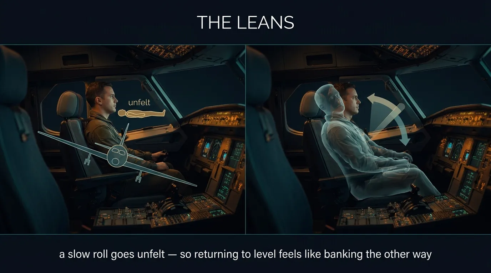

Human Performance & Limitations · Module F — The Deceived PilotIllusions & Spatial Disorientation
Chapter 14 — When the senses lie: the taxi, take-off, cruise and approach illusions, the somatogravic and elevator illusions, the leans, false horizons, flicker vertigo — and the one rule that overrides them all: trust your instruments.
DGCA-quotedVarious complex motions and forces and certain visual scenes encountered in flight can create ILLUSIONS of motion and position.
Spatial disorientation from these illusions can be prevented ONLY by visual reference to RELIABLE, FIXED POINTS on the ground or to FLIGHT INSTRUMENTS.
§ 45ILLUSIONS — Introduction
DGCA-quoted definitionIn aviation any mismatch between what we sense and what we expect is an illusion.
Because of the lack of stable visual references and the erroneous mental models that may be produced, the pilot is at a disadvantage.
DGCA-quoted — universality and danger
Illusions may occur during all stages of the flight, and to pilots of every experience and skill level.
The pilot, therefore, should be aware of the possibility of misinterpreting the information received.
Visual illusions are particularly dangerous in aviation, as we normally consider our visual input to be the most reliable of our senses.
45.1 Atmospheric Perspective
DGCA-quotedThe pilot who has flown mostly in relatively polluted air may use "atmospheric perspective" as a cue to range. If he then flies in a very clear atmosphere he may believe distant objects, because of their clarity, to be much closer than they actually are.
Practical example — flying over the desert / over the ocean / above an inversion
A pilot accustomed to hazy/polluted urban airspace develops a mental ruler: "if the runway looks sharp, it must be close". On a crystal-clear day above the desert or over an ocean inversion, that same runway looks "close" at 5+ miles — the pilot starts the descent too early, undershoots, or arrives high & fast at the threshold. The illusion runs the other way too: in a polluted layer, the runway looks "farther" → late descent, dive at the runway.
45.2 Laws of Perceptual Organisation — Gestalt Theory
DGCA-quoted
The "Laws of perceptual organization of Gestalt Theory" deal with factors such as:
Proximity,
Continuity,
Similarity,
Symmetry,
Simplicity, and
Closure.
Gestalt laws formulate basic principles governing how objects are organised and perceived.
Why Gestalt matters in cockpit display design
The reason a glass cockpit groups related data (engine N1/EGT/Fuel-flow on one column; flight-attitude/heading/altitude as a single PFD) is Gestalt proximity & similarity. The pilot's brain naturally fuses these into one "engine block" or one "primary flight" gestalt — reducing scan workload. Misdesigned displays violate Gestalt principles and slow the pilot's interpretation under stress.
§ 46Illusions When Taxiing — Relative Movement
DGCA-quoted general warningWe must use extreme caution to ensure that we do not construct our mental model according to our wishes or desires.
DGCA-quoted — taxi illusionWhen taxiing into a headwind the blowing snow will give the illusion that the aircraft is taxiing faster than it actually is.
Cockpit cross-check
The fix is simple — verify against the ground-speed display on the FMS/GPS, the brake-pedal feel, or by looking at fixed reference markers (runway centreline, taxiway edge lights). Never rely on the relative motion of mobile elements (snow, rain droplets, dust) as a speed reference.
Figure 14.1 — The somatogravic illusion: forward acceleration on take-off feels like a nose-up pitch, tempting a dangerous push forward.
DGCA-quotedAcceleration gives the pilot an impression of the nose of the aircraft pitching UP.
Why — the otolith physics
The otoliths (Part 8 §43.2) sense linear acceleration. During take-off, strong forward acceleration deflects the otolith hair cells in the same direction that gravity would deflect them if the head were tilted back. The brain cannot tell these apart — so it interprets forward acceleration as nose-up pitch.
The reflex response of the disoriented pilot is to push the nose down — into the ground. This is the classic Somatogravic Illusion killer on night/IMC departures, and is the principle behind a string of fatal accidents on dark-night take-offs over water.
§ 48Outside References — Six False-Impression Triggers
DGCA-quoted — verbatim listOutside references may give a false impression within the cockpit:
Immediately after take-off.
Over water.
In hilly terrain.
Gently sloping terrain.
A bank of sloping cloud.
The ground sloping down on the approach.
Why these six are dangerous — common thread
Each of these scenarios removes or distorts a clear, unambiguous horizon. The pilot's brain — which is wired to use the horizon as its vertical reference — substitutes whatever long, straight, dark-light boundary it can find (a coastline, a hill ridge, a cloud bank top). If that boundary is sloped, the pilot subconsciously aligns the wings with it instead of with the true horizon — and ends up in a banked or pitched attitude without realising it.
§ 49Illusions in the Cruise — Auto-genesis & Vertical Separation
Figure 14.2 — The autokinetic effect: a single fixed light in the dark appears to move on its own if stared at.
49.1 Auto-genesis (the autokinetic effect)
DGCA-quotedAuto genesis. Staring at an isolated and stationary light when other visual references are inadequate or absent, may cause auto-kinetic movements of the eyes.
In the dark, a static light will appear to move about when stared at for many seconds. The disoriented pilot will lose control of the aircraft in attempting to align it with the light.
Practical example & defence
A single distant aircraft light, a star, a ground beacon, or the planet Venus on a clear dark night — fixate on it for 6–12 seconds and it appears to drift, dance, or even rotate. The pilot may attempt to follow this "moving" target with control inputs. The defence: do not stare. Scan your visual field continuously, with brief stops on any reference. If a single light source seems to move, glance away briefly and verify against the attitude indicator and other lights.
49.2 Vertical Separation
DGCA-quotedA common problem in flight is the evaluation of the relative altitude of approaching aircraft and the assessment of a potential collision risk.
Why visual altitude assessment of another aircraft is unreliable
At distance, an aircraft is reduced to a point of light or a tiny silhouette. There is no reliable monocular cue to its altitude relative to your own. A constant-bearing approaching target (no relative motion across your windscreen) is the classic collision-course signature — and the most difficult to detect visually. Modern transport aircraft therefore rely on TCAS (Traffic Collision Avoidance System) and ATC altitude verification, not on the pilot's eye, for vertical separation.
§ 50Approach and Landing — Three Stages
DGCA-quotedIn the final stages of a flight the pilot has to cope with the most critical visual tasks, and these may be divided into 3 stages:
Initial judgment of glide slope
Maintenance of the glide slope
Ground proximity judgments.
50.1 Initial Judgment of Appropriate Glide Slope
DGCA-quoted — the "Visual Angle"Visual Angle — To judge the approach path, the pilot is attempting to establish an angle. This angle is the "Visual Angle" and is measured at the pilot's eye DOWN FROM THE HORIZON to the visual aiming point on the runway.
50.2 Width & Slope of Runways
DGCA-quoted — Width of Runways illusionThe width of the runway may also cause incorrect height judgments on the final approach.
A pilot used to a standard width runway may, when approaching an unfamiliar NARROW runway, judge he is too high and therefore round out too low on approach.
The inverse — wide runway illusion
By the same physics, an unusually WIDE runway looks closer / lower than it is → pilot perceives "too low", rounds out too high, lands long and hard.
50.3 The Black Hole Effect
DGCA-quoted — verbatimThe Black Hole Effect — The absence of visual cues (such as night-time approaches over desert or unlit water) leads to an illusion that the aircraft is TOO HIGH, as a result the approach path may be flown at too shallow an angle, the aircraft may touch down SHORT of the runway. This specific illusion is often called the "black-hole illusion", due to the apparent visual "black hole" between the aircraft and the runway.
Figure 14.4 — Approach illusions: a narrow or up-sloping runway makes you feel high (you go low); the black hole makes you feel high on a dark approach.
50.4 Visual Illusions on Approach
DGCA-quoted — Ground Lighting IllusionsLights along a straight path, such as a road, and even lights on moving trains can be mistaken for runway and approach lights.
Bright runway and approach lighting systems, especially where few lights illuminate the surrounding terrain, may create the illusion of less distance to the runway. The pilot who does not recognize this illusion will fly a HIGHER approach.
Conversely, the pilot overflying terrain which has few lights to provide height cues may make a LOWER-than-normal approach.
(a) Shallow Approaches — DGCA verbatim
Triggers that create the illusion of being HIGH → resulting in SHALLOWER approach:
Up-slope runway or terrain
Narrower than usual runway
Feature-less terrain
Rain on the wind screen
Haze
Result: pilot thinks "too high" → reduces descent rate → flies shallow → may land short or hit obstacles.
(b) Steep Approaches — DGCA verbatim
Triggers that create the illusion of being LOW → resulting in STEEPER (HIGH) approach:
Down-sloping runway or terrain
Wider than usual runway
Bright runway / approach lights
Result: pilot thinks "too low" → increases descent rate → flies steep → may land long or run off the end.
Runway / approach features → perceived position → pilot's wrong reaction
Visual Feature
Pilot perceives
Reaction
Outcome
Narrower than usual runway
"Too high"
Reduces rate of descent
Shallow approach · land short / low round-out
Wider than usual runway
"Too low"
Increases rate of descent
Steep approach · land long / high round-out
Up-sloping runway/terrain
"Too high"
Shallow approach
Low / land short
Down-sloping runway/terrain
"Too low"
Steep approach
High / land long
Featureless terrain
"Too high"
Shallow
Low / land short (black-hole family)
Rain on windshield / haze
"Too high"
Shallow
Low / land short
Bright runway / approach lights
"Too low" (looks close)
Steep
High / land long
Few terrain lights below
"Higher than reality"
Shallow
Lower than normal approach
Black hole (no cues between)
"Too high"
Shallow
Land short
50.5 Maintenance of the Glide Slope
DGCA-quoted — Aiming Pilot & Aircraft Attitude Pitch Angle
Once established on the glide path, it is relatively easy to visually maintain the glide path by keeping the aiming point at a FIXED POSITION on the windscreen.
DGCA-quoted — Inadvertent Speed Loss trap
On the approach, with an inadvertent speed loss and a gradual loss of altitude, the runway could remain in the same position on the windscreen, giving the impression of a safe approach, until touch down occurs some distance BEFORE the threshold.
Texture and Texture Flow — DGCA-quotedAs long as visual texture flows AWAY FROM the aiming point and the visual angle between this point and the horizon remains constant, the approach will progress normally.
("Texture flow" = the pattern of ground objects (runway markings, taxiway lights, surrounding terrain detail) appearing to flow outward and past you. If the flow point sits ON the aiming spot, you are tracking towards it. If the flow seems to converge ahead of the aiming spot, you are undershooting; behind it, overshooting.)
50.6 Ground Proximity Judgments
DGCA-quoted — height-assessment cuesThe pilot will use a number of cues in his height assessment on the final stage of the approach, among which will be:
That the apparent speed of objects on the ground will INCREASE as the height reduces.
That the SIZE of objects, such as runway lights etc., will INCREASE with decreasing distance.
That the apparent WIDTH of the runway will INCREASE.
That the TEXTURE of the ground will CHANGE.
Stage 1 of approach visual task
Initial glide-slope judgment
Stage 2 of approach visual task
Maintenance of glide slope
Stage 3 of approach visual task
Ground-proximity judgments
Visual angle reference
Horizon → aiming point
Aiming-point position rule
Fixed on windscreen
Number of ground-proximity cues
4 (speed · size · width · texture)
§ 51PROTECTIVE MEASURES AGAINST ILLUSIONS
DGCA-quoted — verbatimOrganized formal training is the best protective measure against illusions. It is recommended that this should be used to educate pilots to recognize:
The illusions are natural phenomena.
Know the different types of illusions and their effects.
That the supplementation of other visual cues with information from other sources is the most effective counter to the effects of illusions.
The need for comprehensive flight briefing should the occurrence of illusions be known to exist or are anticipated at particular geographic locations.
Special care must be taken during accelerations and particularly during instrument flying.
Head movements, fatigue, night and conditions of reduced visibility are all factors that can promote visual illusions.
§ 52Disorientation / Vertigo — The Master Rule

CINEMATIC DIAGRAM — pending generation (Banana Pro)Fig 14.3 (The Leans).
Figure 14.3 — 'The leans': a slow roll goes unfelt, so returning to level feels like banking the other way.
DGCA-quoted — the most important sentence in this entire partIf you suspect disorientation, concentrate on and BELIEVE in aircraft Instruments in IMC. If in VMC, look out at the HORIZON.
Why this is the cardinal rule
Every other illusion-management technique in §51 is preparation. This sentence is the action. The moment you suspect you are disoriented, you have a binary choice tree:
In IMC (cloud, night, no horizon) → scan and obey the instruments. The artificial horizon (attitude indicator), altimeter, VSI, ASI, heading indicator, and turn coordinator are unaffected by illusions and tell you what's true. Override the seat-of-the-pants feeling.
In VMC (clear day with horizon) → look out at the real horizon and re-anchor your spatial reference to it. Don't fixate on instruments.
There is no third option. There is no "wait it out". The disorientation will not self-resolve while you ignore both the instruments and the horizon.
§ 53Air / Motion Sickness
DGCA-quotedAir/Motion Sickness — this mismatch between vestibular and visual sensory input is the PRIMARY CAUSE of spatial disorientation, and indeed of motion sickness.
Vibrations within the frequency band of 1/10 to 2 Hertz are a factor contributing to airsickness, because they upset the vestibular apparatus.
Symptoms of Motion Sickness — DGCA verbatim
Nausea and fear
Hyperventilation
Vomiting
Pallor
Cold sweating
Headache
Depression
0.1–2HzVibration band that upsets the vestibular system
Definition (DGCA-quoted):This illusion involves a sudden forward LINEAR ACCELERATION during level flight where the pilot perceives that the nose of the aircraft is PITCHING UP.
Perceived: nose pitching UP.Triggers (DGCA-quoted): Night takeoff from a well-lit airport into a dark sky, OR application of full power during a missed instrument approach.Reflex (wrong) response: the pilot would be to push the control forward to pitch the nose of the aircraft DOWN → flies into the ground.
(c)
Head-Down Illusion
Definition (DGCA-quoted):The head-down illusion involves a sudden linear DECELERATION (e.g., application of air brakes, lowering flaps, decreasing engine power) during level flight.
Perceived: nose pitching DOWN.Reflex (wrong) response: the pilot's response would be to RAISE the nose of the aircraft, which may lead to a STALL if executed during a low-speed final approach.
Underlying physics — same as Somatogravic illusion (§47)
Both illusions are somatogravic — otolith deflection by linear acceleration interpreted as a tilt of the head/body relative to gravity. The general rule:
Acceleration FORWARD → otoliths sense as HEAD-BACK / NOSE-UP → reflex push forward (Head-Up illusion / take-off somatogravic).
Deceleration (acceleration BACKWARD) → otoliths sense as HEAD-FORWARD / NOSE-DOWN → reflex pull back (Head-Down illusion).
Both kill by reflex-induced loss of aircraft attitude. Defence in both: scan the attitude indicator.
§ 55Elevator Illusion
DGCA-quotedAn abrupt UPWARD vertical acceleration, usually by an UPDRAFT, can create the illusion of being in a CLIMB. The disoriented pilot will push the aircraft into a NOSE LOW attitude.
An abrupt DOWNWARD vertical acceleration, usually by a DOWNDRAFT, has the opposite effect, with the disoriented pilot pulling the aircraft into a NOSE UP attitude.
When this kills
This is the family of illusions that traps pilots in convective turbulence (CB cells, mountain wave, microbursts). The vertical kicks of strong updraft/downdraft trick the vestibular sense into perceiving a sustained climb/dive. The pilot's "correction" — pushing or pulling — superimposes on whatever the vertical motion already is, producing wild pitch excursions and potentially loss of control or wing stall.
Defence: in turbulence, fly the attitude (pitch ~3-5° up, wings level), not the airspeed. Let the altimeter swing. Avoid sudden corrective inputs based on seat-of-pants sensation.
Figure 14.5 — The false horizon: sloping cloud tops or ground lights are mistaken for the true horizon.
DGCA-quotedSloping cloud formations, an obscured horizon, a dark scene spread with ground lights and stars, and certain geometric patterns of ground light can create illusions of NOT BEING ALIGNED CORRECTLY with the actual horizon. The disoriented pilot will place the aircraft in a DANGEROUS ATTITUDE.
The four DGCA-listed False Horizon triggers
Sloping cloud formations
An obscured horizon
A dark scene spread with ground lights and stars
Certain geometric patterns of ground light
The "ground lights = stars" trap
On a clear dark night over remote terrain, scattered ground lights below merge visually with stars above — the boundary between them (the true horizon) disappears. The pilot's brain then picks the brightest cluster of ground lights and treats it as "ground" or "below" — but if those lights are on a hillside above the aircraft's altitude, the brain has been told the wrong direction is down. This is one of the most lethal night-VFR illusions.
§ 57Vection Illusions
"Vection" is the sense of self-motion induced by viewing motion of the surroundings. Three forms are recognised in the DGCA syllabus:
57.1
Circular Vection
DGCA-quoted:Is the sensation of self-rotation induced by viewing a surround rotating about the observer's vertical axis.
(Example: standing still in a slowly spinning room — you feel as if you are rotating instead.)
57.2
Linear Vection
DGCA-quoted:During linear vection, the observer feels like they have moved forwards or backwards and the stimulus has stayed stationary.
(Example: seated in a stationary train when the adjacent train moves — you feel your train is moving.)
57.3
Roll Vection
DGCA-quoted:During roll vection, the observer feels like they have rotated around the line of sight and the disk has stayed stationary.
(Example: the brain interprets a rolling visual surround as the body rolling, even when the body is stationary.)
§ 58Geometric Perspective Illusion
DGCA-quoted — short and broad definitionGeometric Perspective Illusion — any misinterpretation by the visual system of a figure made of STRAIGHT or CURVED lines.
Why it matters in aviation
Runway markings, approach light bars, painted aprons, taxiway centrelines, even cloud-bank edges — all are made of straight or curved lines. The brain extracts depth, distance, and orientation from these lines using assumptions (parallel lines converge, near things look bigger, etc.). Anything that breaks those assumptions (e.g. a runway painted with a converging perspective deception, or an upslope that looks like a level runway from far away) creates a geometric-perspective illusion.
§ 59The Stroboscopic Effect (Flicker Vertigo)
DGCA-quoted definition
An additional type of vertigo is known as Flicker vertigo. Light, flickering at certain frequencies, from four to twenty times per second (4 – 20 Hz), can produce unpleasant and dangerous reactions in some people.
DGCA-quoted reactions
These reactions may include:
Nausea
Dizziness
Unconsciousness
Even reactions similar to an EPILEPTIC FIT
DGCA-quoted causes in flight
In a single-engine propeller aeroplane heading into the sun, the propeller may cut the sun to give this flashing effect, particularly during landing when the engine is throttled back.
These undesirable effects may be avoided by not staring directly through the prop for more than a moment, and by making frequent but small changes in RPM.
The flickering light traversing helicopter blades has been known to cause this difficulty.
The bounce back from rotating beacons on aircraft which have penetrated clouds — if the beacon is bothersome, shut it off during these periods.
DGCA-quoted — recommended preventative actions
If a member of the crew or a passenger shows symptoms of the Stroboscopic Effect, the recommended preventative actions are:
Turn the aircraft away from the sun.
Move the person affected to the shade.
Make the individual close eyes.
§ 60Disorientation Summary — REMEMBER
DGCA-quoted — six summary statements (verbatim)
Without visual aid, a pilot often interprets CENTRIFUGAL FORCE as a sensation of RISING or FALLING.
Abrupt head movement during a prolonged constant-rate turn in IMC or simulated instrument conditions can cause pilot disorientation.(This is "Coriolis illusion" / somatogyral cross-coupling.)
A sloping cloud formation, an obscured horizon, and a dark scene spread with ground lights and stars can create an illusion known as FALSE HORIZONS.
An abrupt change from climb to straight and level flight can create the illusion of TUMBLING BACKWARDS.
A rapid acceleration during takeoff can create the illusion of being in a NOSE-UP attitude.
Symptoms of hypoxia may be difficult to recognize BEFORE the pilot's reactions are affected.